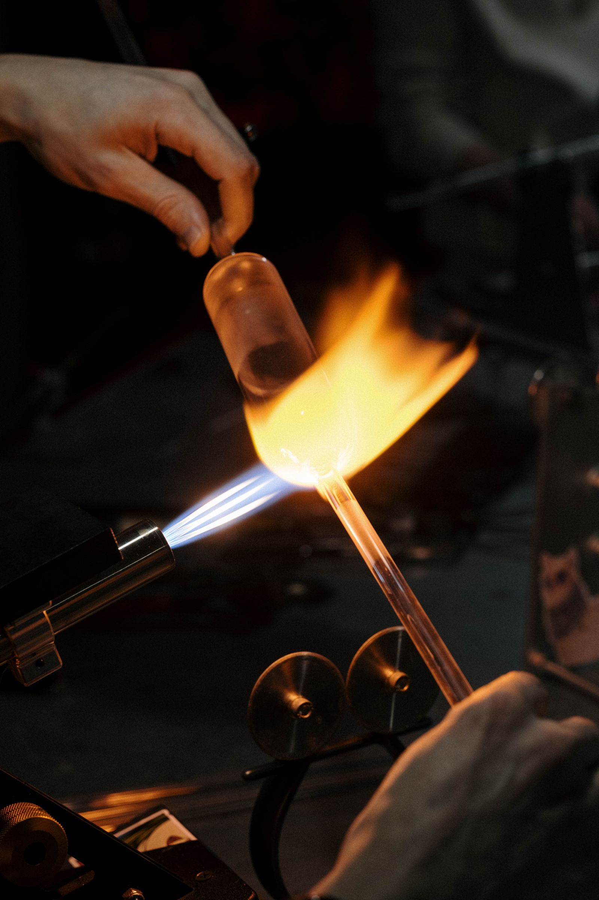

A glassblower who fell for the periodic table
Maren Ilves trained as a glassblower in Nuutajärvi, Finland's glass village, and spent four years in a commercial tube-bending shop learning the trade the signage industry teaches: fast bends, standard fills, work that is priced by the letter. She was good at it and bored by it. What she wanted was the part of the craft the shop treated as plumbing — the gas itself.
A discharge tube is a small, honest piece of physics. Seal a gas in glass, give it a high voltage, and it answers with the colour of its own electrons falling home. Neon can only be red. Xenon can only be blue-white. There is no pigment to argue with and no filter that isn't a lie. Ilves founded the Discharge Lab in 2016 to work that seam: sculpture where the medium is an element, behaving.
Her position, stated once and printed everywhere: LED flex is a fine product. It is also a photograph of neon, not neon — this studio works in the original. The works are slower to make, heavier to ship, and mortal in ways a strip of diodes is not. That mortality is not a defect of the medium. It is the medium, and the lab prices and papers its work accordingly.

Five stages, no shortcuts
The drawing
Full-size, on paper, on the bench. The drawing fixes the metres, the circuits and the colour — which fixes the gas before any glass is warmed. The client approves the drawing, and the deposit (40%) falls due here.
The bend — by the right hands
Long runs and free curves are bent by the artist. Tight returns and monumental single pieces go to master bender R. Aho, who has bent tube for thirty years. His metres are charged through at the printed rate and his name goes on the recipe plate. Collaboration is credited, never absorbed.
The fill
Tubes are evacuated, bombarded clean, and filled to a stated pressure with the gas named on the plate — and only that gas. If the fill on the bench differs from the fill on the drawing, the drawing is re-issued. The plate never lies to match the tube.
Burn-in
48 hours for the first circuit, plus 12 per additional transformer, running on the bench rack. Weak welds and slow leaks declare themselves here, in the studio, where they are cheap — not on the client's wall, where they are not.
Install
The studio installs the artwork and its transformers, with access designed in — a service point you can reach, a circuit map on the wall cabinet. Final electrical connection and certification are by a certified electrician (the building's own, or arranged and passed through at cost): the artist supplies the artwork, its load schedule and its test certificates.
Light art is maintenance art
Everything in this medium is mortal, and the lab tells you before the sale, not after the failure. A well-made tube holds its fill for decades; the things around it do not. Transformers are consumables with an expected life of eight to ten years. Welds can leak — slowly, over months, as one of ours did (Case file 02 is the whole story, printed). Glass breaks if something hits it. None of this is hidden in small print because there is no small print on this site.
What a repair involves, in plain terms: the failed section comes down, returns to the bench, is re-welded and re-filled, burned in again, and re-hung. A section repair is typically days of bench time and a site visit — priced from the same fee table as new work, with the failed component at cost. If the fault is the bench's, the bench pays. That sentence has been tested once, and it held.
Terms, as practised
Deposit: 40% on approval of the drawing; balance on install.
Lead time: 8–14 weeks from drawing approval — bending, filling and burn-in cannot be hurried, only scheduled.
Care basis: every work ships with its recipe plate, circuit map, burn-in log and a dated maintenance schedule (yearly visual check; transformer horizon stated per work).
Repairs: open to owners of discharge works by any maker. Diagnosis visit within the Helsinki region at the install day rate, pro-rated.
Shipping: works travel crated, by art courier, at cost; a tube that cannot survive the journey is not sold the journey — the lab will say so.
Certification: installations are connected and certified by certified electricians; the studio's part is the artwork, its schedule and its certificates of test.